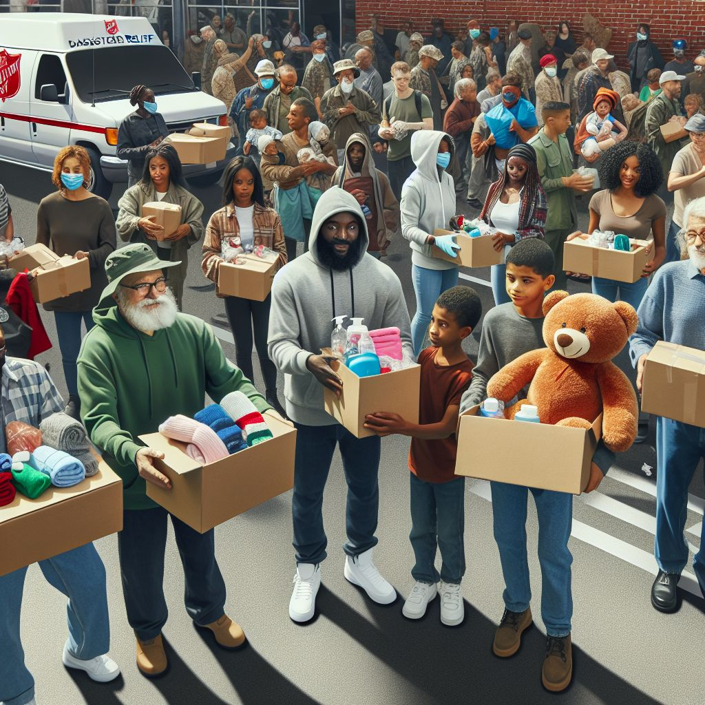
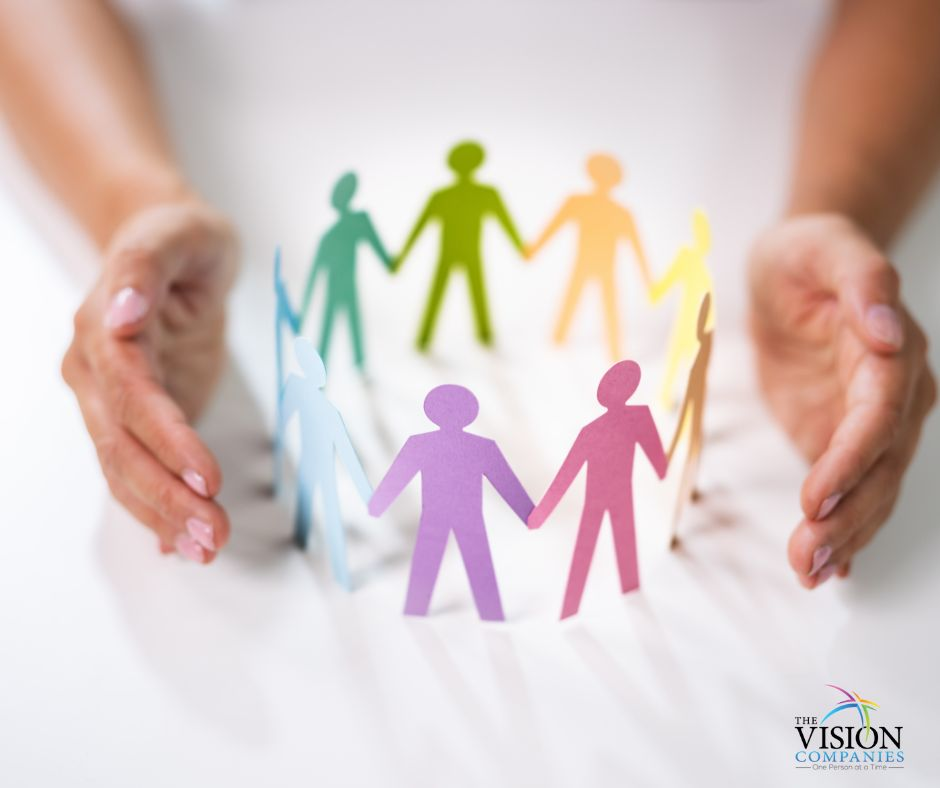
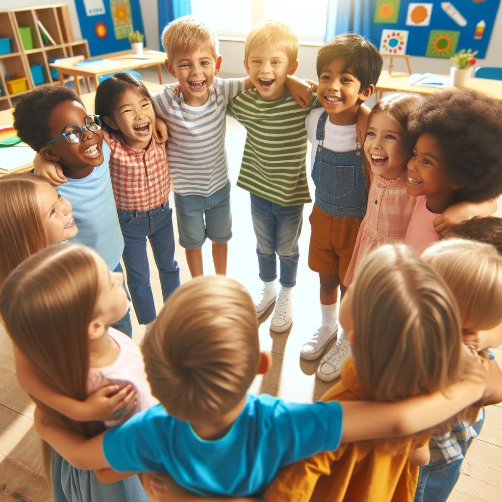

Faça sua doação.

Sua doação faz a diferença! Ao contribuir, você ajuda a criar uma rede de solidariedade que transforma realidades e oferece novas oportunidades. Juntos, podemos construir um mundo mais justo e solidário. Doe e faça a diferença!
Conectando quem tem
a quem precisa.
Aproxima quem quer ajudar de quem precisa de apoio. Aqui, sua doação, seja de itens, recursos ou tempo, encontra um destino certo e transforma vidas de verdade.

Apoie uma Causa.

Contribua com uma das instituições e ajude quem mais precisa. Sua doação é um gesto de esperança e solidariedade. Pequenos gestos criam grandes transformações.